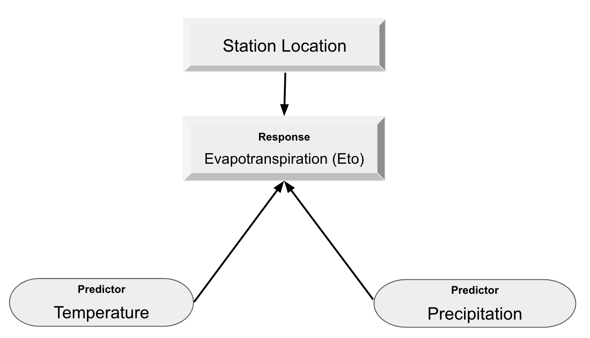
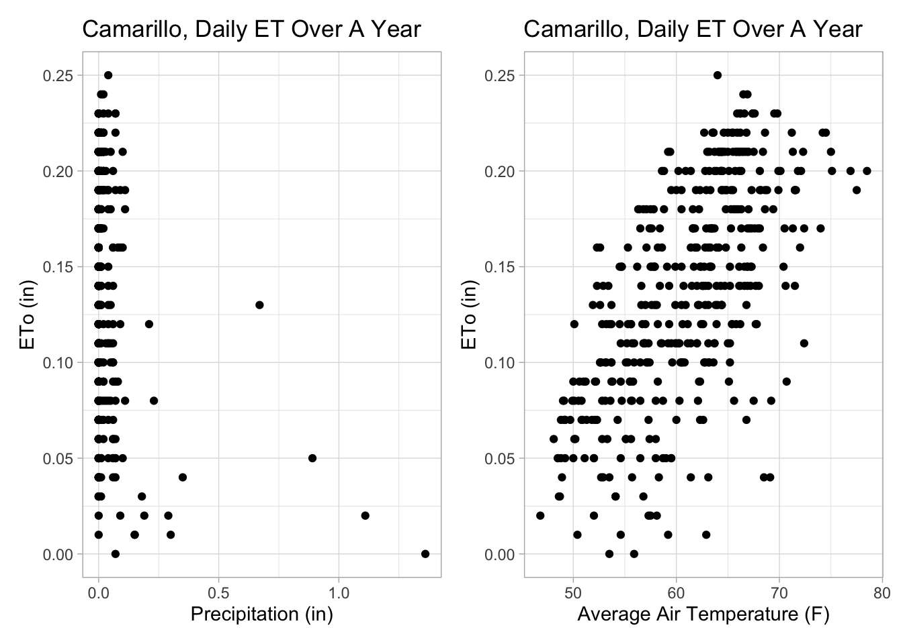
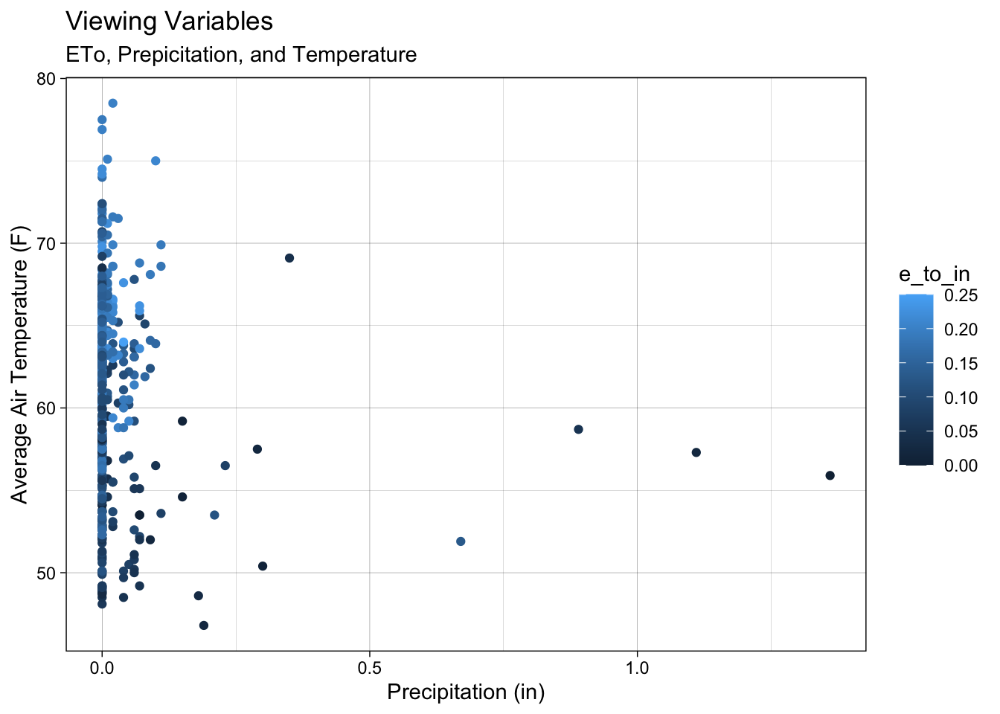
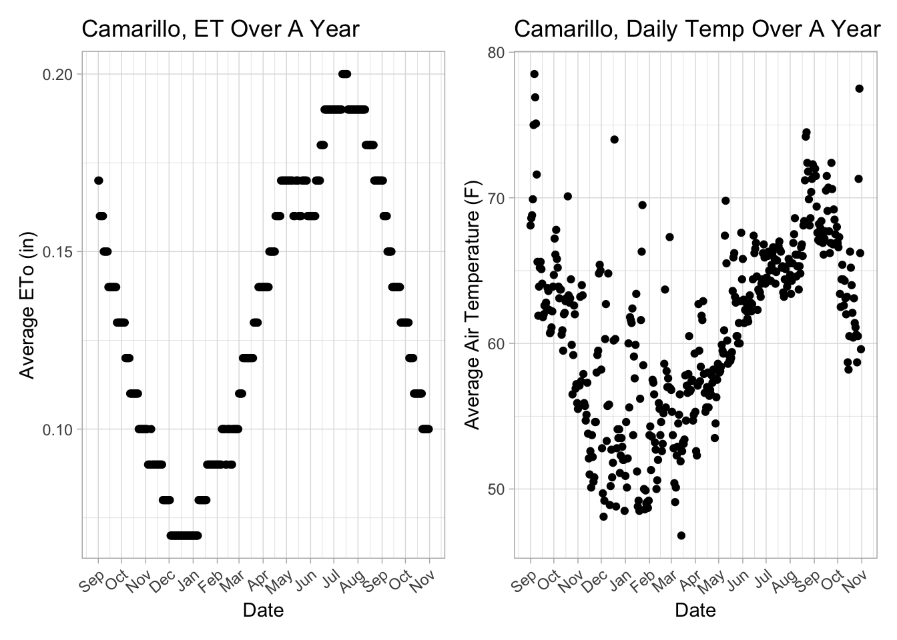
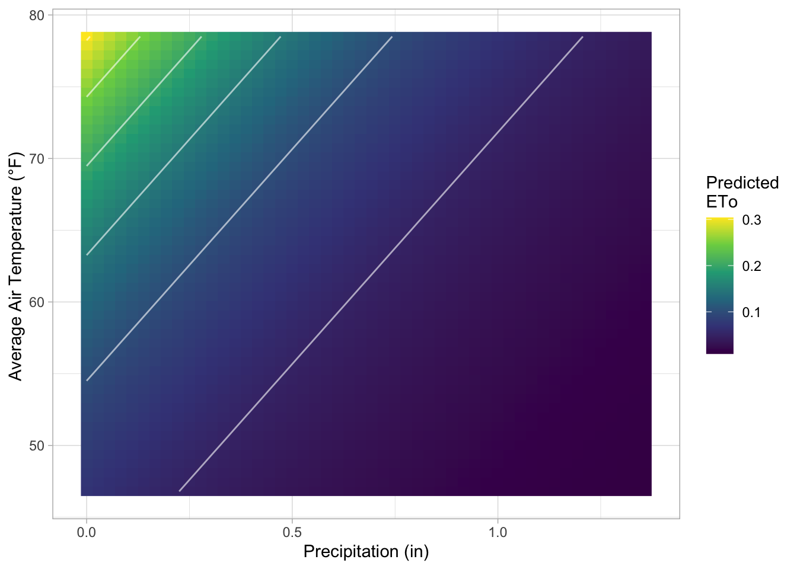
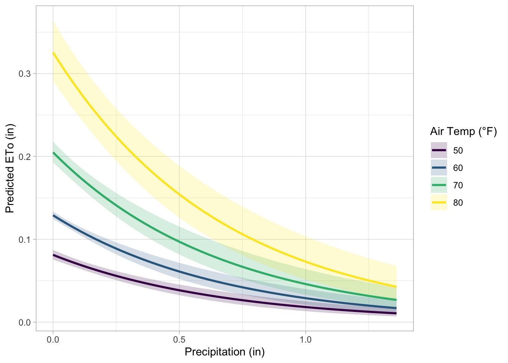

Code
knitr::include_graphics("eddy.png")
knitr::include_graphics("eddy.png")
Eddy Covariance with solar panel set-up in Soledad, California in a Broccoli Field. Credit: Marie Tolteca.
\[ ET_0 = \frac{0.408 \, \Delta \, (R_n - G) + \gamma \frac{900}{T+273} \, u_2 \, (e_s - e_a)}{\Delta + \gamma (1 + 0.34 \, u_2)} \]
The goal of this analysis is to examine how daily ETo responds to two key environmental drivers: precipitation and air temperature. The focus is on understanding how these predictors independently influence ETo. A Gamma GLM with a log link will be used to assess whether this modeling framework is appropriate for the dataset and to explore the relationships between ETo and the environmental variables. Below is a Directed Acyclic Graph (DAG) of how I plan to represent my workflow.
# Including DAG for Gamma Model
knitr::include_graphics(("DAG.png"))
The DAG above represents my understanding of how precipitation and temperature independently influence daily ETo. Precipitation affects surface moisture. For example, wet soil can increase evaporation, but rainy periods are often followed by cloudy, cooler conditions that reduce ETo. ETo is driven by vapor pressure deficit, radiation, and temperature. On days with higher precipitation, ETo tends to decrease due to increased humidity, cloud cover, and lower radiation. In this model, I assume that temperature and precipitation do not influence each other on a daily scale, but instead act as independent drivers of ETo.
The data was retrieved from the California Irrigation Management Information System (CIMIS) CIMIS Link. A profile needs to be created in order to download data. I am focused on the station located in Camarillo, CA. I downloaded the daily data and daily ETo variance for this location from September 2024 - October 2025.
The Gamma distribution is ideal for modeling positive, continuous, right-skewed data. Using a log link ensures that predicted values remain positive and allows for the effects of predictors (temperature and precipitation).
\[ \begin{align} {Eto} &\sim{Gamma(\mu,\phi)} \end{align} \]
\[ \begin{align} log(\mu) = \beta_0 + \beta_1(Precipitation) + \beta_2(Temperature) \end{align} \]
\[ \begin{align} Precipitation: H0 : \beta_1 = 0 \\ HA : \beta_1 < 0 \\ \end{align} \] Null : When there is no precipitation ETo stays the same.
Alt: When there is precipitation, ETo decreases.
\[ \begin{align} Temperature: H0 : \beta_2 = 0 \\ HA : \beta_2 > 0 \end{align} \]
Null: When Temperature is the same, Eto stays the same.
Alt: When Temperature increase there is more ETo
For Reproducibility, these are the libraries used in this blog post to recreate this workflow. The set.seed() is set to always get the same random numbers and keep the consistency of reproducibility. The libraries used are: tidyverse, here, dplyr, patchwork, knitr, lubridate, andbroom.
library(tidyverse)
library(here)
library(dplyr)
library(patchwork)
library(knitr)
library(lubridate)
library(broom)
set.seed(42)Using Rgamma (n, shape, scale). References used Cross Validate and Gamma Positive Continuous Data. Before applying the Gamma regression model to the CIMIS ETo data, I will conduct a simulation test to confirm that the Gamma GLM with a log link is capable of recovering known coefficients under controlled conditions. I simulated predictors (precipitation and temperature) and generated ETo values from a Gamma distribution using specified true coefficients and a chosen shape parameter. I then fit a Gamma GLM to the simulated dataset to verify that the model can accurately estimate the original coefficients. If the model behaves correctly on simulated data and recovers the true parameters, this will increase confidence in applying it to the real world CIMIS data.
# Number of observations
n <- 10000
# Simulate predictors
precip <- rnorm(n, mean = 0, sd = 2) # Precipitation
temp <- rnorm(n, mean = 65, sd = 10) # Avg. Temperature
# Generate Coefficients
beta0 <- -3 # Intercept - # ETo
beta1 <- -2 # Precipitation decreases with Eto
beta2 <- 0.05 # Temperature increases with Eto
# Expected mean on original scale
mu <- exp(beta0 + beta1 * precip + beta2 * temp)
# Gamma Arguments
shape_param <- 12
scale_param <- mu / shape_param
# Response variable - ETo
y <- rgamma(n, shape = shape_param, scale = scale_param)
# Make simulated data into a DF
simulated_data <- data.frame(
precip = precip,
temp = temp,
eto = y
)
# Simulation by fitting a Gamma GLM
sim_model <- glm(eto ~ precip + temp,
family = Gamma(link = "log"),
data = simulated_data)
#Make coefficient table pretty with dplyr, kable and broom
tidy(sim_model) %>%
kable(digits = 3, caption = "Coefficient Estimates for Simulated Data")| term | estimate | std.error | statistic | p.value |
|---|---|---|---|---|
| (Intercept) | -2.989 | 0.019 | -158.636 | 0 |
| precip | -2.000 | 0.001 | -1393.988 | 0 |
| temp | 0.050 | 0.000 | 174.226 | 0 |
The estimated coefficients from the simulated data closely match the values we initially specified (β₀ = -3, β₁ = -2, β₂ = 0.05). This confirms that the Gamma model is appropriate for capturing the relationship between ETo, precipitation, and temperature. The simulation demonstrates that the model reliably recovers known parameter values, this gives confidence that the model can be effectively applied to the real CIMIS dataset.
In our simulated data, we were able to recovered the true coefficients, let’s begin by loading in our data. I will be using two datasets that were retrieved from the CIMIS website, one was for daily ETo and daily data that consisted of precipitation (inches) and temperature (Fahrenheit).
eto <- read_csv(here("blog_post/eddy_co_blog_stats_222/data/daily_eto_variance_CAM.csv"),
show_col_types = FALSE) %>%
janitor::clean_names()
daily <- read_csv(here("blog_post/eddy_co_blog_stats_222/data/daily_data_CAM.csv"),
# R suggested to use
show_col_types = FALSE) %>%
# Helps not have 'qc...6, etc'
janitor::clean_names()
head(eto)To get an initial sense of how daily ETo values are distributed, I created a histogram of e_to_in and added a dashed line marking the sample mean. This provides a quick visual summary of the typical range of ETo values, how frequently different values occur, and whether the distribution is centered or spread out. I also wanted to view the data type, a summary, column names, and NA values in both datasets.
# Data type
class(daily$date)
# View Summary
summary(daily)
# View column names
names(daily)
# # Check NA's
colSums(is.na(daily))
colSums(is.na(eto))
# Changing Date column- Using Lubridate
eto$date <- mdy(eto$date)
daily$date <- mdy(daily$date)# Plot it
ggplot(data = daily,
aes(x = e_to_in)) +
geom_histogram() +
geom_vline(xintercept = mean(daily$e_to_in),
color = "red",
linetype = "dashed",
linewidth = 1)+
labs(
x = "ETo",
y = "Count"
)+
theme_light()
map1<- ggplot(data = daily, aes(x = precip_in, y = e_to_in)) +
geom_point() +
labs(
#title = "Camarillo, Daily ETo (in) Over A Year",
x = "Precipitation (in)",
y = "ETo (in)")+
theme_light()
map2<-ggplot(data = daily, aes(x = avg_air_temp_f, y = e_to_in)) +
geom_point() +
labs(
#title = "Camarillo, Daily ETo (in) Over A Year",
x = "Average Air Temperature (F)",
y = "ETo (in)")+
theme_light()
(map1+map2)
map3 <- ggplot(data = eto, aes(x = date, y = avg_e_to_in)) +
geom_point() +
labs(
#title = "Camarillo, ETo (in) Over A Year",
x = "Date",
y = "Average ETo (in)") +
scale_x_date(
date_breaks = "1 month",
date_labels = "%b") +
theme_light() +
theme(axis.text.x = element_text(angle = 40, hjust = 1))
map4 <- ggplot(data = daily, aes(x = date, y = avg_air_temp_f)) +
geom_point() +
labs(
#title = "Camarillo, Daily Temp Over A Year",
y = "Average Air Temperature (F)",
x = "Date") +
scale_x_date(
date_breaks = "1 month",
date_labels = "%b") +
theme_light() +
theme(axis.text.x = element_text(angle = 40, hjust = 1))
(map3 + map4)
During preliminary data exploration, we can observe the trends in daily ETo, average temperature, and precipitation. The histograms and scatterplots help visualize the distribution and relationships of these variables over time. The next step is to combine the datasets so that all relevant variables are stored in a single dataframe for analysis.
To combine the daily ETo data with precipitation and temperature from the same station, I performed a left join using the shared date column. After merging, I cleaned the dataset by removing all QC-related columns and duplicate station information. Next, I created a scatterplot of precipitation versus temperature and colored each point by its corresponding ETo value. This visualization provides an initial look at how the three variables vary together.
# Joining
daily_eto <- left_join(eto, daily, by = "date") %>%
janitor::clean_names() %>%
# Remove ALL columns that start with "qc_" - Not needed
select(!starts_with("qc_")) %>%
# Drop double column of site name, number, and region
select(!starts_with(c("cimis_region_y","stn_name_y","stn_id_y")))
# Checking NA's
#colSums(is.na(daily_eto))
# View first 5 rows
head(daily_eto)# Plot it!
ggplot(data = daily_eto, aes(x = precip_in,
y = avg_air_temp_f)) +
# Fill points using ETo
geom_point(aes(color = e_to_in)) +
labs(title = "Viewing Variables",
subtitle = "ETo, Prepicitation, and Temperature",
x = "Precipitation (in)",
y = "Average Air Temperature (F)",
color = "ETo (in)")+
theme_light()
In the figure above we can see, when there is a higher average air temperature (F) we can expect more ETo, as show in the color scale. Compared to precipitation, ETo appears lower when precipitation is higher. There also appears to be a right skewed in the data with positive values.
I fit a Gamma generalized linear model (GLM) with a log link. The log link ensures that all predicted ETo values remain positive, and the Gamma distribution is appropriate for modeling continuous measurements that vary proportionally with their mean. In this model, daily ETo is modeled as a function of daily precipitation (inches) and average air temperature (Farenheit). Before fitting the model, I added a very small constant to ETo (1e-6) to avoid any issues with zeros, since the Gamma distribution requires strictly positive values.
# This will remove any negative integers
daily_eto <- daily_eto %>%
# e_to_in is used since we are grabbing daily numbers
mutate(e_to_in_adj = e_to_in + 1e-6)
# Gamma regression for daily ETo
cam_gamma <- glm(
# Response ~ Predictor + Predictor
e_to_in_adj ~ precip_in + avg_air_temp_f,
data = daily_eto,
family = Gamma(link = "log"))
# Look at results
#summary(cam_gamma)
# equation
cam_gamma$formulae_to_in_adj ~ precip_in + avg_air_temp_f# Extract coefficients
B0 <- cam_gamma$coef[1]
B1 <- cam_gamma$coef[2]
B2 <- cam_gamma$coef[3]
# Using Kable and Broom Packages to display GLM Model Coefficients
tidy(cam_gamma) %>%
kable(digits = 3, caption = "Coefficient Estimates")| term | estimate | std.error | statistic | p.value |
|---|---|---|---|---|
| (Intercept) | -4.826 | 0.177 | -27.286 | 0 |
| precip_in | -1.495 | 0.168 | -8.920 | 0 |
| avg_air_temp_f | 0.046 | 0.003 | 16.086 | 0 |
“β0 = -4.83 (β₀): The expected e_to_in_adj (ETo) when precipitation (in) and temperature (F) are equal to 0.”
“β1 = -1.5 (β₁): For every 1-inch increase in precipitation, ETo will decrease, holding temperature constant.
“β2 = 0.05 (β₂): For each 1 (F) increase in mean air temperature, ETo tends to increase, holding precipitation constant.”
All three coefficients hold a p-value of <2e-16, this implied that all three constants are different from zero. Both predictors have a strong effect on ETo. With more rain, the lower the ETo. With higher temperature the more ETo.
To visualize how the Gamma GLM predicts ETo across the full range of observed precipitation and air temperature values, I generated a prediction grid using the sequence of precipitation and temperature within their observed ranges. The fitted Gamma model was then used to compute predicted ETo (phi) for each point in the grid.
# A grid of predictors to generate predictions for
pred_grid <- expand.grid(
precip_in = seq(min(daily_eto$precip_in), max(daily_eto$precip_in),
length.out = 50),
avg_air_temp_f = seq(min(daily_eto$avg_air_temp_f), max(daily_eto$avg_air_temp_f),
length.out = 50))
# Generating our predictions
eto_pred <- pred_grid %>%
mutate(phi = predict(cam_gamma,
newdata = pred_grid,
type = "response"))
# Plot 1
plot1 <- ggplot(eto_pred, aes(x = precip_in, y = avg_air_temp_f)) +
geom_raster(aes(fill = phi)) +
geom_contour(aes(z = phi), color = "white", alpha = 0.6) +
# Scale - color fill
scale_fill_viridis_c(option = "rainbow") +
labs(
#title = "Predicted Evapotranspiration",
#subtitle = "Gamma Model Log Link",
x = "Precipitation (in)",
y = "Average Air Temperature (°F) ",
fill = "Predicted\nETo"
) +
theme_light()
# plot 2
plot2<- ggplot(eto_pred, aes(x = precip_in, y = phi, color = avg_air_temp_f)) +
geom_point(alpha = 0.5) +
geom_line() +
scale_color_viridis_c(option = "rainbow") +
labs(
#title = "Predicted ETo vs Precipitation",
#subtitle = "Gamma GLM with log link",
x = "Precipitation (in)",
y = "Predicted ETo (in)",
color = "Temperature (°F) "
) +
theme_light()
# Viewing Plots
(plot1 / plot2)
Interp: The contour plot (top plot) shows that predicted ETo increases with higher temperatures and decreases as precipitation increases. The scatter and line plot (bottom) conveys the same relationships: at higher temperatures, ETo is higher, and increasing precipitation corresponds to lower ETo. In the bottom plot, the effect of temperature is somewhat harder to distinguish due to overlapping points and lines, which could be improved by grouping temperature into discrete levels. These relationships are more clearly visualized in the following plot with confidence intervals added.
To visualize the confidence intervals, I calculated 95% confidence intervals for predicted ETo across a range of precipitation values at selected temperature levels (50°F, 60°F, 70°F, and 80°F). A prediction grid was created at these temperature levels, and predicted values along with their standard errors were obtained on the link (log) scale. Confidence limits were constructed on the link scale and then transformed back to the response scale using the inverse link function. The resulting curves and shaded ribbons illustrate how predicted ETo varies with precipitation while showing the uncertainty associated with each temperature level.
# Selected temperature levels for better visualization
temp_levels <- c(50, 60, 70, 80)
# Expand grid
pred_grid1 <- expand.grid(
# Grab sequence of precipitation
precip_in = seq(min(daily_eto$precip_in), max(daily_eto$precip_in), length.out = 50),
# Use selected levels
avg_air_temp_f = temp_levels)
# Prediction for Standard Error- This will be used for CI
eto_se <- predict(
object = cam_gamma,
newdata = pred_grid1,
type = "link",
se.fit = TRUE)
# Inverse link function (exp for log link)
linkinv <- family(cam_gamma)$linkinv
# Prediction Grid for CI bounds
eto_pred <- pred_grid1 %>%
mutate(
logit_p = eto_se$fit,
logit_p_se = eto_se$se.fit,
# 95% CI on link scale
logit_p_lwr = qnorm(0.025, mean = logit_p, sd = logit_p_se),
logit_p_upr = qnorm(0.975, mean = logit_p, sd = logit_p_se),
# Inverse to original scale: Creates Ribbons
phi = linkinv(logit_p),
phi_lwr = linkinv(logit_p_lwr),
phi_upr = linkinv(logit_p_upr))
# Plot with CI
plot3<- ggplot(eto_pred, aes(x = precip_in, y = phi, group = factor(avg_air_temp_f))) +
# Ribbon per temperature level
geom_ribbon(aes(ymin = phi_lwr, ymax = phi_upr, fill = factor(avg_air_temp_f)),
alpha = 0.2, color = NA) +
# Line per temperature level
geom_line(aes(color = factor(avg_air_temp_f)), size = 1) +
# Discrete color/fill scale
scale_fill_viridis_d(option = "rainbow", name = "Air Temp (°F)") +
scale_color_viridis_d(option = "rainbow", name = "Air Temp (°F)") +
labs(
x = "Precipitation (in)",
y = "Predicted ETo (in)") +
theme_light()
plot3
# View Plots Together
(plot1 / plot3)
Interp: Plot 3 shows the relationship between expected daily evapotranspiration (ETo) and precipitation at various air temperature levels. Wetter days are associated with decreased atmospheric demand for water loss because ETo drops as precipitation increases across all temperatures. At any given precipitation level, higher air temperatures are associated with higher ETo because warmer air increases evaporative demand. When both temperature is low and precipitation is high, predicted ETo is lowest. The 95% confidence intervals for the model’s predictions are shown by the shaded ribbons. They display the range of anticipated ETo values for every temperature and precipitation combination that would result from repeatedly gathering new data and refitting the same model. Narrower ribbons indicate higher certainty in the predicted mean ETo, while wider ribbons indicate greater uncertainty.
Lastly, I combined the plots together to provide a clear view of how ETo varies with precipitation and temperature. The main takeaway is when temperature increases drier days which hold and remove more water. When temperature decreases, minimal ETo is produced. This could be because of an increase in humidity, cloud cover, and rain events on cooler days.
@online{tolteca2025,
author = {Tolteca, Marie and Tolteca, Marie},
title = {Eddy {Covariance} - {Gamma} {Model} and {Simulation}},
date = {2025-12-10},
url = {marietolteca00.github.io/blog_post/eddy_co_blog_stats_222},
langid = {en}
}